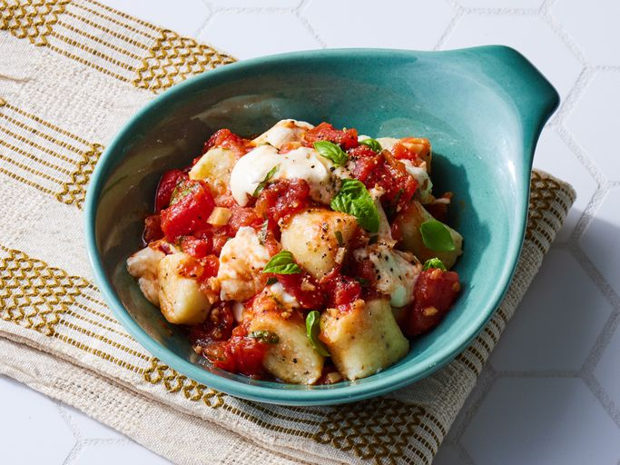

Ricotta Gnocchi

Description
This ricotta gnocchi recipe was passed down to me by my great-aunt. It is easy, traditional, and delicious!
Ingredients
Gnocchi
- 1 (8 ounce) container ricotta cheese
- 2 large eggs
- ½ cup freshly grated Parmesan cheese
- 1 teaspoon salt
- 1 teaspoon pepper
- 1 teaspoon garlic powder
- 1 cup all-purpose flour, or as needed
Sauce
- 3 tablespoons olive oil
- 1 tablespoon minced garlic
- 1 (15.5 ounce) can diced tomatoes
- 1 dash crushed red pepper flakes (Optional)
- 6 basil leaves, finely shredded
- Salt and pepper to taste
- 8 ounces fresh mozzarella cheese, cut into small chunks
Steps
- Gather all ingredients.
- Prepare the gnocchi: Stir together ricotta, eggs, Parmesan, salt, pepper, and garlic powder in a large bowl until evenly combined. Mix in 1 cup flour. Add additional flour if needed to form a soft dough.
- Divide dough into 3 or 4 pieces and roll into 1/2-inch thick ropes on a floured surface. Cut each rope into 1-inch pieces and place on a lightly floured baking sheet. Place in the refrigerator until ready to use.
- Make the sauce: Heat olive oil in a saucepan over medium heat. Stir in garlic and cook until softened and fragrant, about 1 minute. Pour in diced tomatoes and red pepper flakes; bring to a simmer over medium-high heat and cook for 10 minutes. Stir in shredded basil and season to taste with salt and pepper.
- While sauce is simmering, bring a large pot of lightly salted water to a boil over high heat. Boil the gnocchi until they float to the surface, 1 to 2 minutes, then drain.
- To assemble the dish: Stir cubed mozzarella into the sauce and allow the heat of the sauce to soften but not melt the cheese.
- Place gnocchi into a serving bowl and spoon sauce overtop. Enjoy!
Home